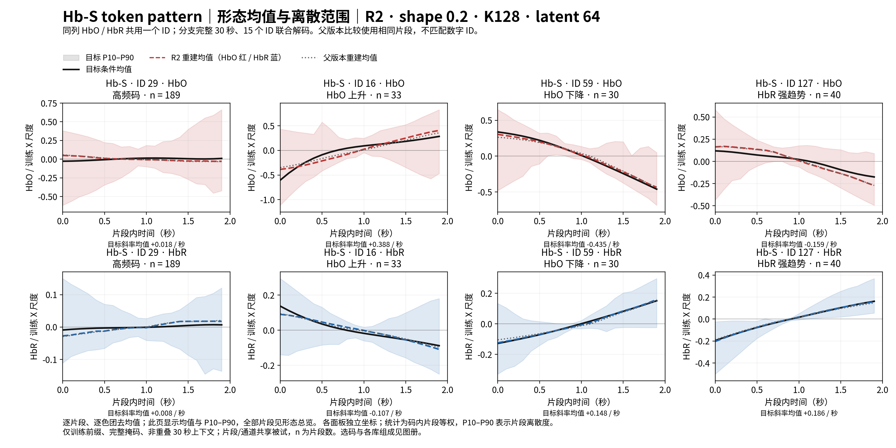
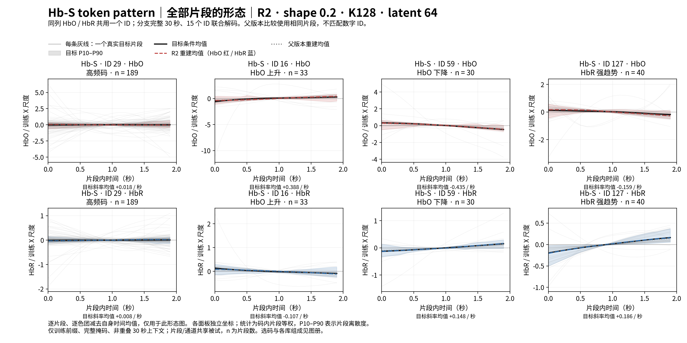
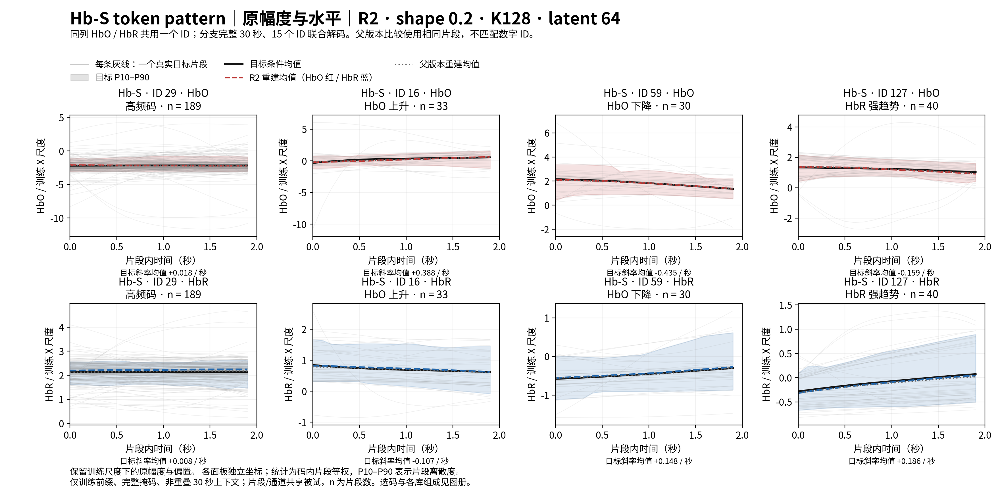
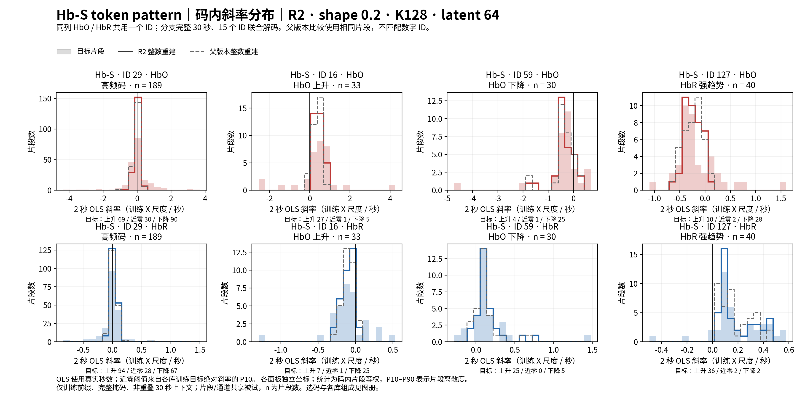
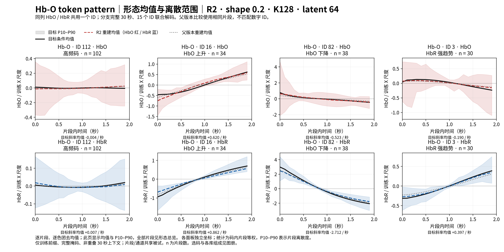
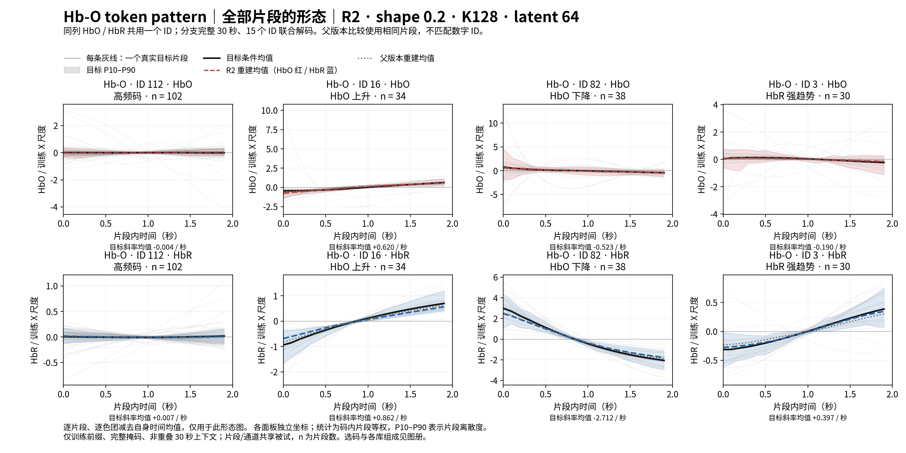
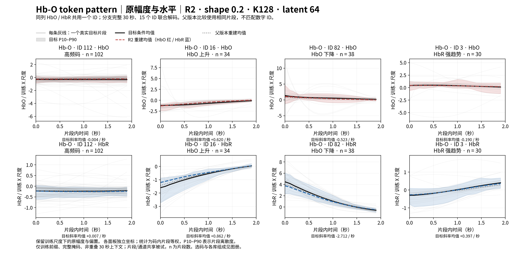
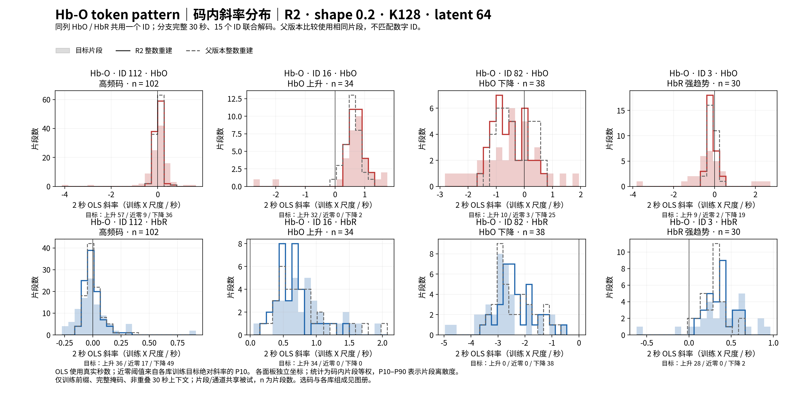

选用形态损失权重 0.2 的终点模型（seed 17）。每分支 K128、latent 64，每 2 秒一个 ID；同一 ID 同时表示 HbO/HbR。灰线是赋到此码的条件 S/O 目标片段；彩色虚线是完整整数序列解码后切出的片段均值。它描述真实赋码条件下的形态分布，邻近 ID 也参与解码。
选码仅使用训练前缀，要求至少 30 个完整片段，依次选高频码、HbO 斜率中位数最大/最小码、剩余码中 HbR 斜率中位数绝对值最大码。所有曲线均值及区间使用码内片段等权；各数据集份额如下，不能把不同码的组成差异当作跨被试规律。两行独立纵轴避免色团幅度差异遮蔽细节。
模型与来源 · 全部片段身份 · 斜率统计 · 图中数值 · 复现命令
| 分支 / ID | 选择依据 | 片段数 | Single-Trial | REFED | Simultaneous | Visual |
|---|---|---|---|---|---|---|
| S / 29 | 高频码 | 189 | 1 | 181 | 0 | 7 |
| S / 16 | HbO 上升 | 33 | 0 | 16 | 17 | 0 |
| S / 59 | HbO 下降 | 30 | 2 | 12 | 16 | 0 |
| S / 127 | HbR 强趋势 | 40 | 1 | 16 | 22 | 1 |
| O / 112 | 高频码 | 102 | 15 | 48 | 19 | 20 |
| O / 16 | HbO 上升 | 34 | 18 | 3 | 0 | 13 |
| O / 82 | HbO 下降 | 38 | 1 | 35 | 0 | 2 |
| O / 3 | HbR 强趋势 | 30 | 5 | 18 | 2 | 5 |







